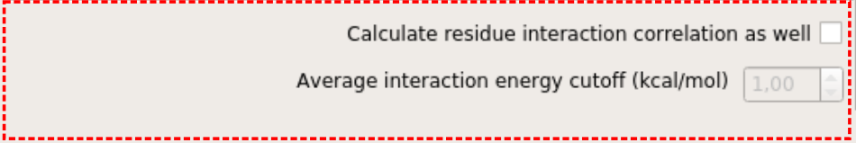
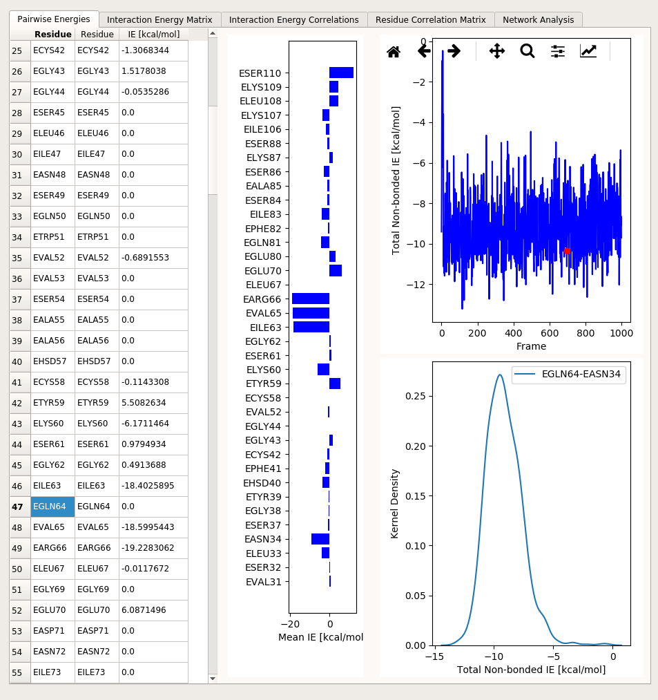
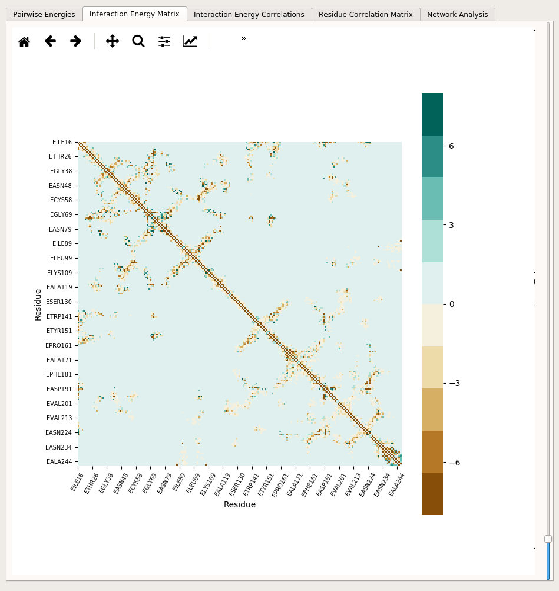
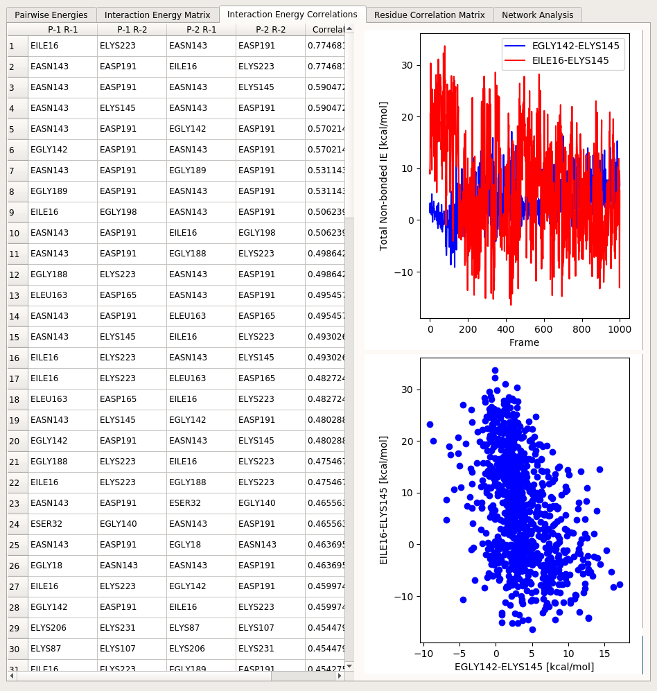
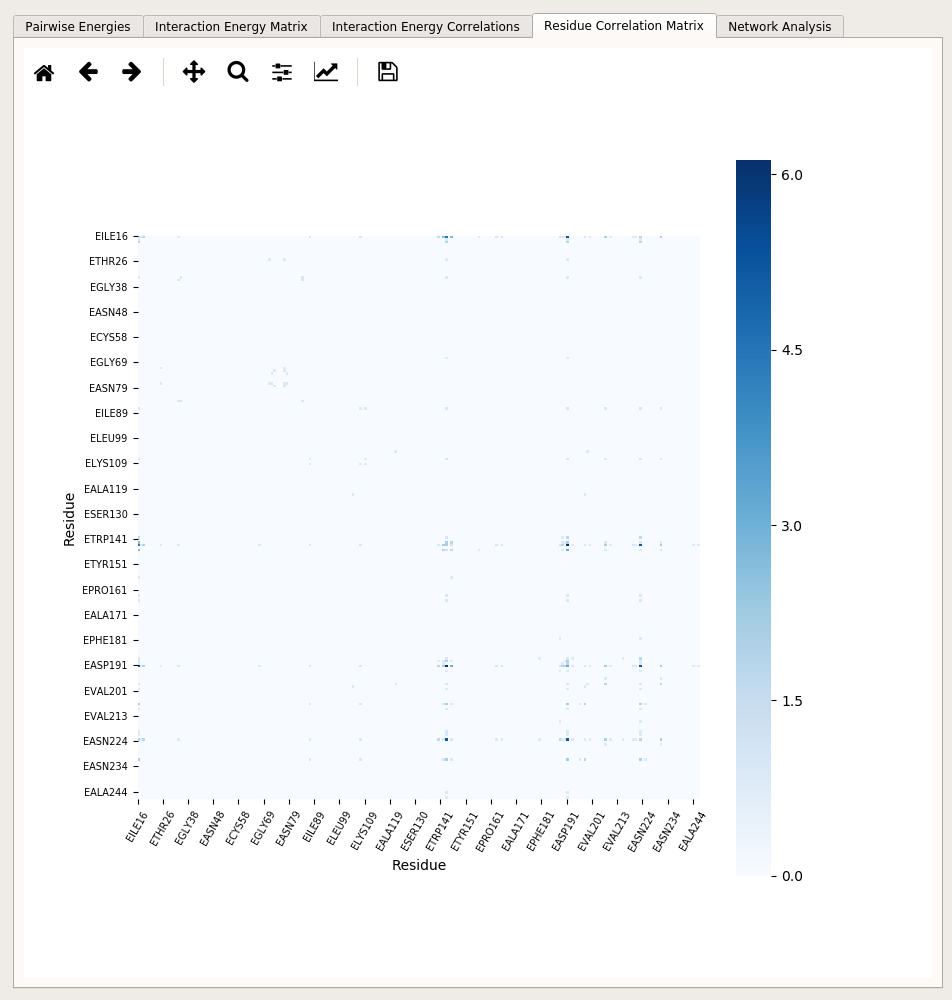
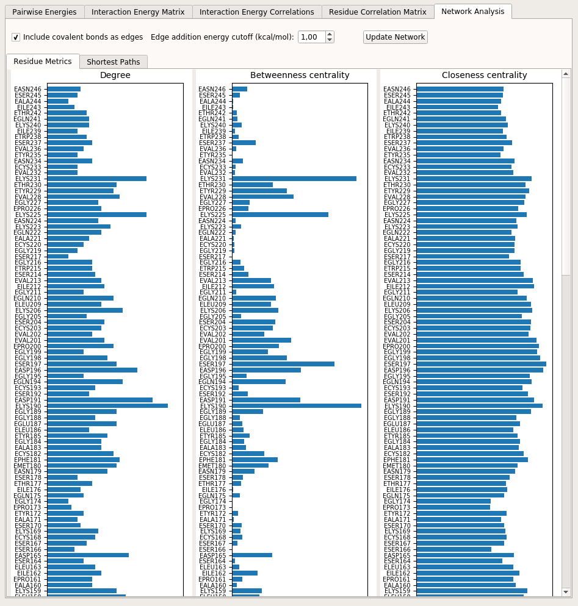

Tutorial¶
Dependencies¶
gRINN was designed to work with NAMD or GROMACS-generated MD simulation trajectories, hence topology, structure and trajectory files are expected.
Moreover, the tool interoperates with NAMD or GROMACS -depending on which type of input data you give as input-, so you will need to provide the location of the NAMD or GROMACS(gmx) executable you’ve used for MD simulation prior to the start of calculation.
Since you’re interested in using this tool, you’re probably already a user of either NAMD or GROMACS; however, if the executable is for some reason not installed/located on your system or if you’re just interested in trying out the tool, you should obtain and install them from the respective developers as we can’t distribute them ourselves.
Download NAMD here. (Please use a non-CUDA multicore version)
Download GROMACS here.
Please note that downloading NAMD requires registration. Recommended versions are NAMD 2.12b and GROMACS 5.1.4 (although we expect any NAMD version above 2.9 and any GROMACS 5.x version to work fine with gRINN).
Preparing input data¶
For NAMD-generated trajectories¶
In this tutorial, we will use sample NAMD data from a short MD simulation of the trypsin enzyme. Therefore, this step is not required for completing the tutorial. You are, however, advised to delete solvent molecules from your input Protein Data Bank (PDB), Protein Structure File (PSF) and DCD files before using gRINN with your own data. Otherwise a very high amount of RAM will be required by gRINN for processing the trajectory file, particularly if you choose to use multiple CPU cores. The completion time will increase significantly as well.
gRINN does not offer a function for removing the solvent molecules from input files, however this can be done using standart software such as VMD.
If you have used psfgen or VMD’s Autopsf plug-in, usually the first PSF/PDB pair generated during system preparation for MD simulation prior to solvation step is what you need. To remove the solvent from the DCD, you can load the trajectory into VMD and save the coordinates of “protein” atoms into a new DCD file.
For GROMACS-generated trajectories¶
If you’re submitting a GROMACS trajectory, there is no need for additional data preparation. You can just give your topology (TOP), run input (TPR) and trajectory (XTC or TRR) files as input to gRINN.
Starting the Application¶
If you have not done already, start gRINN by following the steps below:
- Download the archive suitable for your OS (currently only Linux and Mac OSX is supported) and extract the contents to a folder of your choice.
- For Linux: open a terminal in that directory and start gRINN by typing
./grinn. Alternatively, you can navigate to another directory, open a new terminal and start gRINN by typing the full path of gRINN. - For Mac OSX: simply double-click the extracted application bundle. If that fails, follow the steps for Linux.
gRINN Main Window¶
Upon execution of grinn, the following window appears:
This is the main window of gRINN. The links at the bottom direct the user to respective sections of this website.
gRINN offers two interfaces: New Calculation and View Results.
New Calculation: This interface is used for pairwise residue interaction energy and (optional) interaction energy correlation calculations.
View Results: This interface is used to visualize results from New Calculation and construct Protein Energy Networks using these data.
Go ahead and click on New Calculation now.
gRINN New Calculation¶
You should now see a window like the following one:

This is the New Calculation interface. gRINN New Calculation is used to:
- specify paths to input files, NAMD/GMX executables and other custom calculation settings
- start interaction energy and/or correlation calculations
- monitor the progress of computation
- start “View Results” interface once the calculation is completed.
The New Calculation UI elements can be grouped into four main parts based on their functionality. These are shown in the snapshot above in various color frames. We shall first describe the interface, then load sample NAMD data and start a calculation.
Input files, output folder and NAMD/GMX executable paths¶
The black frame includes UI elements for specifying the input files and the output folder.

Full paths to PDB/PSF/DCD files (in case of NAMD data) or TPR/TOP and XTC or TRR files (in case of GROMACS data) can be specified either by typing/pasting the full file path to corresponding text edit boxes or via browsing by clicking the “Browse for…” buttons.
Output folder specifies the folder in which gRINN results are stored. Note that the output folder you specify should NOT exist prior to calculation. “Output Folder” button should be used as a convenience for selecting a parent folder for your output folder. gRINN will create the output folder inside this parent folder.
The path of the NAMD/GMX executable is set to namd2 by default. This requires that a valid NAMD executable is present in the executable search path of your system (in linux, this is the PATH environment variable). If namd2 is not accessible via the executable search path, provide the full path here. The same logic applies to the gmx executable, i.e. typing just gmx in this text box will assume that the gmx executable is accessible via the executable search path.
For NAMD, at least one additional parameter file, containing the parameters included in the force-field you’ve used for your simulation, is required. If you’ve used more than one parameter file, you can specify the full paths to these files in the text box by leaving one blank space between them. Alternatively, you can put all parameter files in the same directory and then select them via “Browse for Parameter File (NAMD)” button.
Calculation settings¶
The blue frame includes UI elements for specifying the settings used for non-bonded pairwise residue interaction energy calculations.

Solute dielectric (NAMD) specifies the dielectric constant that is used while computing the electrostatic component of the interaction energy (dielectric keyword in the NAMD configuration file). The default value is 1.0, which means that the electrostatic interactions will not be modified. Any value larger than this value lessens the electrostatic forces. More information can be found in NAMD User Guide.
Selection 1 and Selection 2 define custom atom selections that include residue groups between which non-bonded interaction energies will be computed. ProDy atom selection syntax is used here.
Note
This setting is useful if you’re only interested in pairwise residue interactions within a specific subset of your protein. If you want a full characterization, leave these selections at the default settings (all). Note that using a custom residue selection here will also lead to incorrect Protein Energy Network (PEN) construction while using the “View Results” interface.
Percent cutoff and Filtering distance cutoff settings specify criteria for selecting pairs of residues between which non-bonded interaction energies will be computed. Default values are 60% and 12 Angstroms, meaning that only pairs of residues whose centers-of-mass come closer than 12 Angstroms in at least 60 percent of trajectory frames will be included. For NAMD calculations, this specifies the cutoff distance for non-bonded interactions as well.
Trajectory stride specifies a stride value for the input trajectory. For example, if you have 1000 frames in your trajectory and set a value of 10 here, every 10th frame will be included in the calculation, yielding a total of 100 frames. Default stride value is 1 (all frames are included).
Number of processors specify the number of CPU cores to be used. The default value is the number of cores available in your system. This option is useful in cases where you have another CPU-intensive process running in the background and don’t want to employ all available resources for gRINN.
Correlation settings¶
The red frame includes UI elements for activating residue interaction energy correlation (Pearson’s product moment correlation).
Calculate residue interaction correlation as well check box enables/disables correlation calculation between all pairwise residue interaction energy time series computed.
Average interaction energy cutoff specifies a cutoff for correlation calculations. Interactions with mean energy values below this cutoff value will be excluded from correlation calculations. Default value is set to 1 kcal/mol.
Note
Correlations are reported only if the value is significant (i.e. Pearson’s r above 0.4) to reduce the noise in the reported data and maintain a manageable output file size.
Starting and monitoring the calculation¶
The yellow frame on the right side of the UI includes two buttons for starting and stopping the calculation and three progress bars to monitor the percentage of completion of the three steps involved in the calculation. Finally, at the bottom, a button to start View Results interface is included, which becomes activated once an interaction energy calculation task is successfully completed.

CALCULATE button, when pressed, will first check the input (files, settings, whether the output folder exists, etc.). If valid input is detected, computation starts with filtering the interacting pairs. Pairwise residue interaction energies are computed in the second step. Final step, correlation, is done only if the corresponding checkbox is selected.
STOP button is for stopping the operation of gRINN. This is useful if you notice that you need to change a setting after starting the operation or simply want to cancel it.
Note
Note that the STOP button does not pause the operation. You need to start all over again if you click on this button (A warning is spawned for confirmation to prevent accidental clicking here).
Start calculation with sample NAMD data¶
Let’s load some sample data and start a calculation to see how gRINN works. Click on load sample NAMD data and settings.
You will see that the input file UI elements are now populated with some values. The top three text boxes include paths to PDB, PSF and DCD files from a 50 nanoseconds-long MD simulation of bovine cationic trypsin (structure extracted from PDB id 3OTJ).
Note
Note that the PSF and PDB files correspond to a step prior to solvation step during preparation of the system for MD simulation using VMD and psfgen. Solvent molecules in the DCD trajectory were removed by using VMD.
Note
The DCD file corresponds to an equilibrium stage of the simulation (between 25 and 50 nanoseconds). A stride value of 25 was applied in order to reduce the file size bundled with gRINN.
The path of the output folder is set to grinn_output in the current working directory. It is safe to change this path as long as it does not exist before starting the calculation.
The path of the NAMD executable is set to namd2 by default. This requires that a valid NAMD executable is present in the executable search path of your system (in linux, this is the PATH environment variable). If namd2 is not accessible via the executable search path, provide the full path here.
Parameter file text box is filled now with the path of the parameter file used for the sample MD simulation.
Click on CALCULATE now. After an initial input checking step, gRINN should start by filtering the residue pairs to be included in interaction energy calculation. Once this is complete, interaction energies will be calculated, followed by equal-time correlation calculations. Depending on the capacity of your computer, the operation will take some time between a few minutes and an hour or two. You can follow the progress by keeping an eye on the progress bars which will show the estimated amount of remaining time as well.
Once gRINN finishes operation, you will be notified and VIEW RESULTS button will be enabled. You can now proceed to viewing the results either by clicking this button or View Results button on the gRINN Main Window.
gRINN View Results¶
Upon starting View Results interface, you will be immediately prompted to browse and select a folder containing results from the previous step in gRINN.
Go ahead and select this output folder now.
If the folder is valid, you will see the message Please click OK to start loading your data…. Just click OK to proceed.
After some time, another message will appear, saying A trajectory exists in your output folder. Would you like to load it as well? Warning: This might slow down the display significantly if the trajectory file size is large.. Click Yes to proceed.
Note
If you choose No here, the trajectory will not be loaded and the sliding bar to control the frame displayed in the molecular viewer embedded in the interface (see below) will be disabled.
Once all of the output is loaded into the UI, you will see the View Results interface looking like the following figure:

View Results interface can be separated into three main parts based on the functionality of UI elements.
The black frame includes a text box and a button for selecting an output folder. Upon selecting an output folder by using the button, the contents of that folder (if it is a valid gRINN output folder) will be loaded, discarding the currently displayed output (if there’s any).
The red frame includes an embedded molecular viewer (which is a PyMol instance) that is updated upon interaction with the blue frame UI elements. How this occurs is explained in the relevant sections of each tab below. The PyMol viewer allows zoom-in and out (rmb), rotation (lmb while on protein) and translation (middle mouse button) modes.
The blue frame includes UI elements, organized into several tab panels. The results displayed in this section are extracted from the files included in the output folder. The content of each tab is explained below.
Pairwise Energies¶
Pairwise Energies tab includes several UI elements that display individual pairwise residue interaction energies. The UI looks like the following:
On the left, a table displays average interaction energies between selected pairs of residues. Due to the excessively high number of all possible pairwise interactions even in a small protein, not all pairs are displayed at once in this table. Instead, only one interaction pair is selected at one time via clicking relevant cells of the table. The selected item of the first column determines the first residue in an interaction pair. The selected item of the second column determines the second residue in an interaction pair.
So, for example, if you click on residue EGLN64 in the leftmost column, the average interaction energies with all other residues with this residue are displayed in the third column of the table. In addition to this, the vertical bar plot right next to the table is updated to reflect non-zero interaction energies of all other residues with EGLN64. If you then click on EASN34 in the second column or on the bar plot, the interaction pair is updated as EGLN64 and EASN34. This will cause the plots on the right hand side of this tab to reflect interaction energy time series and energy distribution belonging to these two residues over the trajectory frames.
Note
gRINN identifies residues with chain ID, amino acid type (three-letter code) and the residue number. For example, EASN34 here just means the residue 34 (ASN) of chain E in the protein structure.
Once you select an interaction pair this way, the protein structure that is displayed in the molecule viewer embedded on the right will reflect this pair of residues as well.
Note
gRINN uses kcal/mol as the energy unit.
Note
Note that some interaction energies will be negative (attractive) and some will be positive (repulsive).
Interaction Energy Matrix¶
Interaction Energy Matrix tab includes a heat map that displays average interaction energies between all pairs of residues:
The heatmap shows so-called energetic “hot-spots” in the protein structure. Many of these spots correspond to secondary structure elements, disulfide bonds as well as residues that are not sequence neighbors but in close contact with each other in the folded protein structure. The heatmap can be zoomed in & out and saved into a file using the toolbar included above. The upper and lower boundaries of the heatmap can be adjusted by using the sliding bar located on the right-hand side of the heatmap. The boundary setting affects the total range from negative to positive interaction energies.
Double-clicking on a cell on this heatmap will update the right pane molecule viewer to reflect the selected residue pair on the protein structure.
Interaction Energy Correlations¶
Interaction Energies Correlations tab includes several UI elements that display data related to equal-time linear correlations between interaction energy time series:
The table here displays a list of the pairs of residues involved in a specific correlation (with the first two columns indicating the two residues in the first interaction pair and the third and fourth columns indicating the two residues in the second interaction pair). The last column shows the correlation value.
Clicking on a row in this table will update the two plots next to the table to reflect the two interactions involved in the correlation against the trajectory frames (top) as well as each other (bottom). The right pane molecular viewer will be updated to highlight the four residues.
Residue Correlation Matrix¶
Residue Correlation Matrix tab includes a heatmap showing the “Residue Correlation Matrix” (RC Matrix) that is constructed using the interaction energy correlations. RC matrix is one way of extracting dynamical correlation information from interaction energies of residue pairs in the structure.
The matrix is constructed to be able to map the correlation values on the three dimensional structure [KK2009]. In other words, the correlation values are translated into a residue-residue type of information. The matrix is an NxN square matrix (N being the number of residues in the structure) and is constructed by considering the mutual occurence of a given pair of residues in both sides of a correlation. For example, if the correlation between the interaction EGLY142-ELYS145 and the interaction EILE16-ELYS145 is 0.6 and the correlation between the interaction EGLY16-ELYS223 and the interaction EGLY142-EASP191 is -0.5, the residue correlation between EILE16 and EGLY142 would be the sum of the absolute values of these two correlation coefficients (which is 1.1)) [*] This summation is performed for all calculated correlations for each residue pair in the structure.
Like the interaction energy matrix, the heatmap can be zoomed-in and out. Double-clicking a cell in the heatmap will highlight the corresponding residue pair in the right pane molecular viewer.
| [*] | Note that the values given here are exemplary and do not reflect the values you’ve just inspected in the previous tab. |
Network Analysis¶
Protein Energy Network (PEN)
The term “Protein Energy Network” has been used first time by Vijayabaskar and Vishveshwara [VV2010] in a study where they constructed such networks of protein structures using pairwise residue interaction energies computed over ensembles of structures obtained from MD simulations.
In this method, a network is constructed by taking individual residues as nodes and average interaction energies between each residue pair as the “weight” for edges that are added between these residue nodes. Once the network is constructed, local (node-based) network metrics, such as degree, closeness and betweenness centralities can be obtained to assess the importance of each residue in terms of protein stability and dynamics.
gRINN constructs such a network once you load an output folder into the View Results interface. Each residue in the structure is taken as a node in the PEN. Unlike the original approach of [VV2010] where edge weights are assigned as the average interaction energies, gRINN specifies the edge weights by following the approach used by [RO2014]. Accordingly, an edge is added using the following general criteria:
In the above equation, \({\omega_{ij}}\) denotes the edge weight between residues i and j. \({\chi_{ij}}\) denotes the average interaction energy between residues i and j. Note that the addition of edges between covalently bound residues is optional (see below).
\({\chi_{ij}}\) is computed using the formula by [RO2014] as well:
In this equation, \(\epsilon_{ij}\) denotes the average interaction energy between residues i and j, \(\epsilon_{av}\) denotes the average interaction energy of all pairwise residue interaction energies and \(\epsilon_{rmsd}\) denotes the Root Mean Square Deviation of all interaction energies. Note that by using this equation, the more attractive (negative) an interaction is, the higher weight will be assigned to the edge of that specific interaction. It is possible for repulsive (positive) interaction energies to obtain negative weights. In such a case, the weight is reassigned as zero. Hence, the matrix \(\chi_{ij}\) only contains weight values between 0 and 1.
Network Analysis Tab
Network Analysis tab includes UI elements for inspecting the node-level (residue-level) metrics and shortest paths in a Protein Energy Network (PEN) constructed by using the interaction energy matrix.
It is possible include/exclude covalent bonds as edges and specify an interaction energy cutoff for edge addition using the respective checkbox and the spinbox at the top of this tab panel. It is necessary to update the network by clicking of Update Network button if these settings are changed.
Residue Metrics tab here shows three types of local metrics (node/residue-based): Degree, Betweenness Centrality and Closeness Centrality.
Shortest Paths tab allows the user to select a source and a target residue and find all alternative short pathways between these two residues within the structure of the PEN. The shortest paths are found by using Dijkstra’s algorithm [DEW1959]. Note that since this algorithm favors edges with lower weights and in reality we want stronger interactions to be preferred in a short path (which have higher edge weights), a new edge property (distance) is assigned to each edge by calculating \(1-\chi_{ij}\) and this distance value is considered as the edge weight when employing Dijkstra’s algorithm.

Upon clicking a path in the shortest path table, the right pane molecular viewer will be updated to reflect the path.
References¶
| [KK2009] | Kong, Y., & Karplus, M. (2009). Signaling pathways of PDZ2 domain: A molecular dynamics Interaction Correlation Analysis. Proteins, 74(1), 145–154. http://doi.org/10.1002/prot.22139 |
| [VV2010] | (1, 2) Vijayabaskar, M. S., & Vishveshwara, S. (2010). Interaction Energy Based Protein Structure Networks. Biophysical Journal, 99(11), 3704–3715. http://doi.org/10.1016/j.bpj.2010.08.079 |
| [RO2014] | (1, 2) Andre A. S. T. Ribeiro and Vanessa Ortiz (2014). Determination of Signaling Pathways in Proteins through Network Theory: Importance of the Topology. Journal of Chemical Theory and Computation 2014 10 (4), 1762-1769. DOI: 10.1021/ct400977r |
| [DEW1959] | Dijkstra, E.W. Numer. Math. (1959) 1: 269. https://doi.org/10.1007/BF01386390 |
Output folder content¶
If gRINN completes the operation successfully, you should see the following files in the output folder:
- traj_dry.dcd
- system_dry.psf
- system_dry.pdb
- network.gml
- grinn.log
- energies_resIntCorr.csv (if you enabled interaction energy correlation)
- energies_resCorr.dat (if you enabled interaction energy correlation)
- energies_intEnVdW.csv
- energies_intEnTotal.csv
- energies_intEnMeanVdW.dat
- energies_intEnMeanTotalList.dat
- energies_intEnMeanTotal.dat
- energies_intEnMeanElec.dat
- energies_intEnElec.csv
- energies.pickle
traj_dry.dcd includes the frames of your input trajectory that were used by gRINN. View Results interface reads conformations of protein structure into the PyMol instance from this file.
system_dry.psf and system_dry.pdb contain your input protein structure topology and coordinates.
grinn.log is the log file produced by gRINN.
energies_resIntCorr.csv includes data displayed in Interaction Energy Correlations tab in View Results interface in comma-separated values format.
energies_resCorr.dat includes the RC matrix that is displayed as heatmap in Residue Correlations tab.
energies_intEnVdW.csv includes non-bonded Van-der Waals interaction energies in CSV format.
energies_intEnTotal.csv includes non-bonded Total interaction energies (sum of Van der Waals and Electrostatic energies) in CSV format.
energies_intEnElec.csv includes non-bonded Electrostatic interaction energies in CSV format.
energies_intEnMeanVdW.dat includes average non-bonded Van der Waals interaction energy matrix between all pairs of amino-acids.
energies_intEnMeanElec.dat includes average non-bonded Electrostatic interaction energy matrix between all pairs of amino-acids.
energies_intEnMeanTotal.dat includes average non-bonded Total interaction energy matrix between all pairs of amino-acids. This data is displayed as heatmap in Interaction Energy Matrix tab.
energies.pickle is a pickled dictionary which contains all pairwise interaction energies between residues in protein structure.
gRINN with GROMACS data¶
TO-DO…
gRINN Command-Line Interface¶
TO-DO…